I began painting this series of portraits - finding great Americans who spoke the truth and combining their images with their words - as a way to channel my anger and grief after the Sept. 11 terrorist attacks. In the process my respect and love for these people and their courage helped to transform that anger into hope and pride and allowed me to draw strength from this community of truth tellers, finding in them the honesty, tolerance, generosity, wisdom and compassion that have made our country strong.
Human history is not simply something that we read about or that happens to us. History is something we shape by our determination to be involved in the events of our time, or by our complacency. All of us, adults and children, can affect our history by insisting that our questions are answered and the truth is told, and by working to pass on to future generations a more just and equal world.
We have been taught in this country to honor the health of the economy, not the health of nature. A people who believe their reality is the economy will value, above all else, profit, economic growth and materialism. They will poison their children and destroy their land. But the truth is, our fundamental reality is nature. If we disregard, by exploitation and pollution, nature’s laws, we invite our own destruction. We invite ourselves and all living species to be collateral damage for the gods of money. Our economy must be in the service of nature if we are to have true democracy. We must listen to environmental leaders such as the individuals honored here if we are to survive. (See the Image Gallery to find the quotes below paired with Shetterly's portraits of their speakers.)
“The most common form of terrorism in the U.S.A. is that carried on by bulldozers and chainsaws. It is not enough to understand the natural world; the point is to defend and preserve it. Sentiment without action is the ruin of the soul.”
Edward Abbey Writer, ‘Desert anarchist,’ 1927-1989
“The ‘control of nature’ is a phrase conceived in arrogance, born of the Neanderthal age of biology and the convenience of man.”
Rachel Carson Biologist, Writer, Ecologist, 1907-1964
“The essence of the problem is about consumption, recognizing that a society that consumes one third of the world’s resources is unsustainable. This level of consumption requires constant intervention into other people’s lands. That’s what’s going on.”
Winona LaDuke Native American Activist, Environmentalist, Writer, 1959-
“The most remarkable feature of this historical moment on Earth is not that we are on the way to destroying the world - we’ve actually been on the way for quite a while. It is that we are beginning to wake up, as from a millennia-long sleep, to a whole new relationship to our world, to ourselves and each other.”
Joanna Macy Buddhist Scholar, Systems Theorist, Ecologist, Teacher, Activist, 1929-
“I’m helping to create an economic system that will respect and protect the Earth - one which would replace corporate globalization with a global network of local living economies. Business is beautiful when it’s a vehicle for serving the common good.”
Judy Wicks Activist, Businessperson, 1947-
“The battle we have fought, and are still fighting, for the forests is part of the eternal conflict between right and wrong, and we cannot expect to see the end of it … So we must count on watching and striving for these trees, and should always be glad to find anything so surely good and noble to strive for.”
John Muir Conservationist, Naturalist, Explorer, 1838-1914
“What we are all calling for is a revolution in public education ... When the hearts and minds of our children are captured by a school lunch curriculum, enriched with the experience in the garden, sustainability will become the lens through which they see the world.”
Alice Waters Chef, Author, Community Activist, 1944-
“There can be no daily democracy without daily citizenship. A deep democracy … holds up for future generations the principle that the pursuit of justice is the condition for the pursuit of happiness.”
Ralph Nader Public Citizen, 1934-
“The eyes of the future are looking back at us and they are praying for us to see beyond our own time.”
Terry Tempest Williams Naturalist, Writer, Environmental Activist, 1955-
“The most alarming sign of the state of our society now is that our leaders have the courage to sacrifice the lives of young people in war but have not the courage to tell us that we must be less greedy and wasteful.”
Wendell Berry Farmer, Essayist, Conservationist, Novelist, Teacher, Poet, 1934-
“What an extraordinary time to be alive. We’re the first people on our planet to have real choice: We can continue killing each other, wiping out other species, spoiling our nest. Yet on every continent a revolution in human dignity is emerging. It is re-knitting community and our ties to the Earth. So we do have a choice.
We can choose death; or we can choose life.”
Frances Moore Lappé Writer, Activist, 1944-
“In southern West Virginia we live in a war zone. [Coal mining companies are using] 3.5 million pounds of explosives … every day to blow up the mountains. Blasting our communities, blasting our homes, poisoning us, trying to intimidate us. I don’t mind being poor. I mind being blasted and poisoned. There ARE no jobs on a dead planet.”
Judy Bonds Social Justice Activist for Coal River Mountain Watch, 1952-
You can view all 114 of Robert Shetterly’s remarkable portraits here. A book, note cards and free curriculum also are available, as well as the schedule of a traveling exhibit.
|
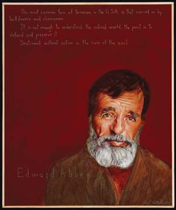 ROBERT SHETTERLY “The most common form of terrorism in the U.S.A. is that carried on by bulldozers and chainsaws. It is not enough to understand the natural world; the point is to defend and preserve it. Sentiment without action is the ruin of the soul.” - Edward Abbey |
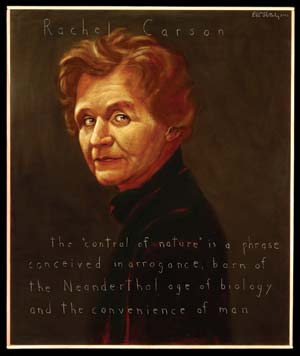 ROBERT SHETTERLY “The ‘control of nature’ is a phrase conceived in arrogance, born of the Neanderthal age of biology and the convenience of man.” - Rachel Carson |
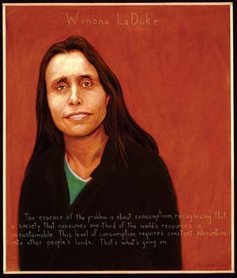 ROBERT SHETTERLY “The essence of the problem is about consumption, recognizing that a society that consumes one third of the world’s resources is unsustainable. This level of consumption requires constant intervention into other people’s lands. That’s what’s going on.” - Winona LaDuke |
|
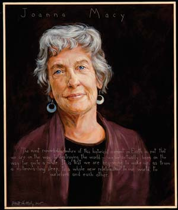 ROBERT SHETTERLY “The most remarkable feature of this historical moment on Earth is not that we are on the way to destroying the world - we’ve actually been on the way for quite a while. It is that we are beginning to wake up, as from a millennia-long sleep, to a whole new relationship to our world, to ourselves and each other.” - Joanna Macy |
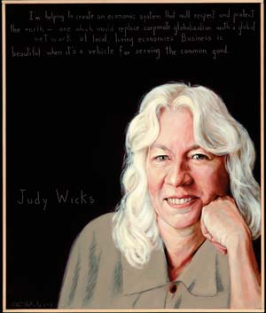 ROBERT SHETTERLY “I’m helping to create an economic system that will respect and protect the earth - one which would replace corporate globalization with a global network of local living economies. Business is beautiful when it’s a vehicle for serving the common good.” - Judy Wicks |
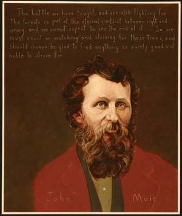 ROBERT SHETTERLY “The battle we have fought, and are still fighting, for the forests is part of the eternal conflict between right and wrong, and we cannot expect to see the end of it … So we must count on watching and striving for these trees, and should always be glad to find anything so surely good and noble to strive for.” - John Muir |
|
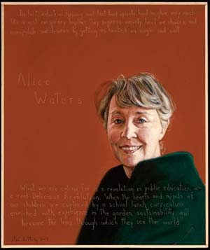 ROBERT SHETTERLY “What we are all calling for is a revolution in public education … When the hearts and minds of our children are captured by a school lunch curriculum, enriched with experience in the garden, sustainability will become the lens through which they see the world.” - Alice Waters |
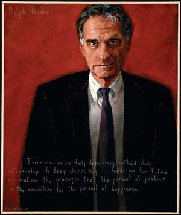 ROBERT SHETTERLY “There can be no daily democracy without daily citizenship. A deep democracy … holds up for future generations the principle that the pursuit of justice is the condition for the pursuit of happiness.” - Ralph Nader |
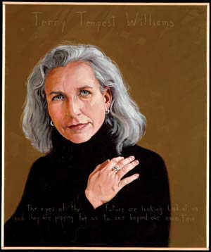 ROBERT SHETTERLY “The eyes of the future are looking back at us and they are praying for us to see beyond our own time.” - Terry Tempest Williams |
|
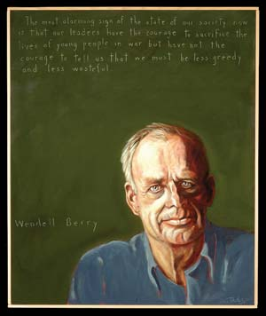 ROBERT SHETTERLY “The most alarming sign of the state of our society now is that our leaders have the courage to sacrifice the lives of young people in war, but have not the courage to tell us that we must be less greedy and wasteful.” - Wendell Berry |
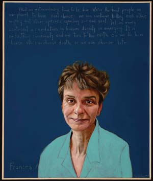 ROBERT SHETTERLY “What an extraordinary time to be alive. We’re the first people on our planet to have real choice: We can continue killing each other, wiping out other species, spoiling our nest. Yet on every continent a revolution in human dignity is emerging. It is reknitting community and our ties to the Earth. So we do have a choice. We can choose death; or we can choose life.” - Frances Moore Lappe |
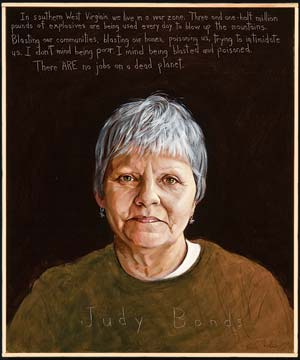 ROBERT SHETTERLY “In southern West Virginia we live in a war zone. [Coal mining companies are using] 3.5 million pounds of explosives … every day to blow up the mountains. Blasting our communities, blasting our homes, poisoning us, trying to intimidate us. I don’t mind being poor. I mind being blasted and poisoned. The ARE no jobs on a dead planet.” - Judy Bonds |